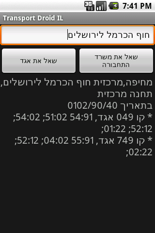
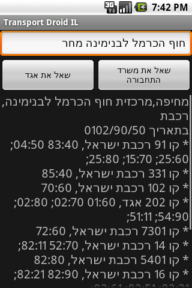
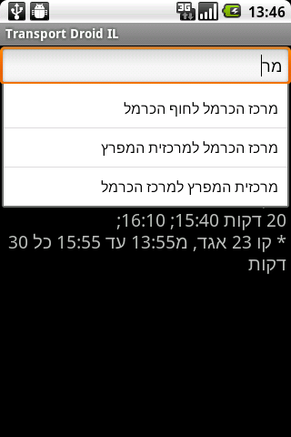

This is a handy little app for querying Egged's site, as well as the new Ministry of Transportation site, on transportation information. This is pretty beta, but seems to work well enough. Android 1.5 (cupcake) or up, requires proper Hebrew support (including BiDi) on your device.
Just Android.
Download TransportDroidIL.apk, or scan this:
...'cause we all love 'em. Notice that the numbers are reversed on the emulator, as proper BiDi support hasn't worked its way into the official Android build. If your phone does BiDi correctly (standard vendor ROMs in Israel), this application will work correctly.
You can query Egged for faster, stabler results:
Alternatively, you can query the new MOT site for information on all bus companies and the rail company:
The query box auto-completes using previous queries:
Ohad Lutzky (ohad@lutzky.net)
Ohad Lutzky (ohad@lutzky.net)
You can download this project in either zip or tar formats.
You can also clone the project with Git by running:
$ git clone git://github.com/lutzky/TransportDroidIL